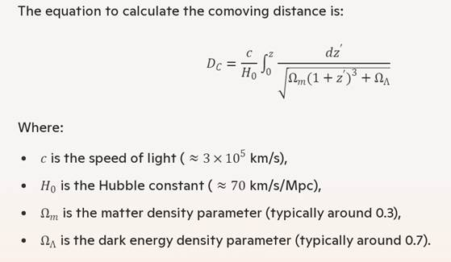

Decreasing Universe: The Distance
as a function of Redshift (new)
João Carlos Holland de Barcellos
Summary: Using the "Decreasing Universe" model [01] we will
show evidence that this new model of the dynamics of the Universe is less
disruptive and more adequate than the traditional Λ-CDM model that postulates the existence of Dark
Energy.
We will also develop, from
this new theory, a simple and straightforward mathematical formula that
provides the distance of the galaxy as a function of its redshift.
Keywords: Decreasing Universe Theory, DUT, λ-CDM, Redshift, Expansion of
the Universe, Galaxies, Hubble, Dark Energy.
Introduction
The " Decreasing Universe"[01][02]
model proposes that the gravitational field shrinks space and everything else
inside. In this way, if we are under a gravitational field, we will also be
decreasing in size as well as all our rulers and measuring instruments.
The rate of contraction is
quite slow (7% every 1 billion years, here on Earth), but it is enough to give
us the false impression that galaxies are moving away at an
accelerated rate (if my distance pattern is decreasing, the distances will seem
further and further apart).
Thus, to explain the
mysterious accelerated separation of galaxies, through this erroneous
interpretation, the existence of "Dark Energy" was postulated.
The problem with "Dark
Energy" is its origin: It has never been explained or detected in any way
other than the accelerated detachment effect itself, and therefore violates the
main law of thermodynamics: the Law of Conservation of Energy.
In addition, it also violates
the theory of relativity, as it allows galaxies to move away at a speed faster
than light.
Decreasing Universe Theory
The " Decreasing Universe
Theory" (DUT) is a new model, which introduces a single hypothesis: that the gravitational field shrinks space and
everything else inside. This would rule out the need to postulate the
existence of Dark Energy and would otherwise explain the apparent accelerated
remoteness of galaxies.
In this model, based on this
premise, a formula was developed that provides the Apparent Distance (D) (also
called "Proper Distance" or "Luminosity Distance")
as a function of time and the Non-Apparent Distance (D0) (also
called "Comoving Distance").
We will talk a little more
about these two important concepts of cosmology.
Comoving Distance (D0) and Proper Distance (D)
The Comoving distance (D0)
and the Proper distance (D) are concepts used in cosmology to measure the
distance to objects, particularly galaxies.
In the 'Λ-CDM' model :
-The comoving distance[03]
excludes the expansion of space and considers only the peculiar motions of the
galaxy itself (or other object).
-The proper distance (or
Luminosity distance), considers the expansion of space due to Dark Energy and,
therefore, this distance increases as time increases.
In the 'Decreasing Universe' model :
-The Comoving distance (D0)
is the distance measured by an observer in outer space where the gravitational
influence can be considered negligible. In this case, it and its measuring
instruments do not change over time.
-The Proper distance (D) is
the measured distance from the Earth, where there are multiple gravitational
fields that makes space and everything else bathed by this field, contract. In
this case the distances measured beyond our galaxy, as we have seen, also appear to be increasing.
Principle of Equivalence
Let us now understand, or
at least intuit, that the contraction of space by the gravitational field is
something that should almost be expected. Consider the following:
Suppose you are in a rocket
with its engines on, accelerating. What does the theory of relativity say?
It states that the space
inside the rocket will be continuously *contracted* in the direction of
motion. Now, if we invoke the Principle of Equivalence, what would we
conclude?
If contraction occurs
inside the accelerating rocket (as it indeed does), then something similar
should also happen in a gravitational field.
Although this argument is
not a formal proof—since the Principle of
Equivalence cannot be strictly applied in this case—it provides an
intuition that this theory is not as far-fetched as it might initially seem.
The Original Formula
From the referenced article[01][02] we copy the
formula of the distance proper:
D(∆t) = D0* exp( H0*∆t) [F01]
Distance
(proper) measured as a function of time and comoving distance'.
Where:
D = Distance
measured by an observer from Earth ('Proper distance')
D0
= Distance seen by an observer outside the gravitational field ('Comoving
distance')
H0
= Hubble Constant
∆t = Time
Interval (t-t0) until measurement is made
From the above formula, in the case of the distance of a galaxy, the
Hubble Equation was also derived [01]:
V = H0*D [F02]
Hubble Equation
Where:
V = Apparent
Velocity
D = Proper
distance
H0
= Hubble Constant
Redshift
It is interesting to note that we can use the formula [F01] to measure
the relationship of wavelengths coming from galaxies. Thus, we will have:
λ = λ0*exp( H0*∆t) [F03]
Wavelength
Measured within a Gravitational Field
Where:
λ =
Wavelength measured when the photon reaches Earth.
λ0 =
Wavelength when the photon leaves the galaxy, at T0.
We'll also use the redshift (Z) setting:
Z = (λ- λ0
) / λ0 [F04]
Redshift
Definition
From [F03] we can see that λ increases in size, (and also its redshift)
the longer (∆t) it takes the wave to travel in space until it reaches Earth.
The Mass of Galaxies
We should note that in our theory, redshift depends on 4 main factors:
-The time for the photon to cross space and reach Earth (it is the main factor when z is large)
The longer
the time for the photon to reach the Earth, the greater the shrinkage time of
our planet and our galaxy and, therefore, the greater the length that we will
measure of something outside our galaxy, in this case, the size of the wave
(causing a redshift), that is, it will increase the redshift.
-The Mass
of the Origin Galaxy
The galaxy
from which the photon is emitted, like every galaxy, is also shrinking. In this
case, the greater its mass, the greater the shrinkage speed and the more
energetic (shorter the wavelength) the photon will have. This will contribute
to the redshift being lower in more massive galaxies.
On the other hand, counterbalancing this factor, there is also the loss
of energy from the photon to exit the gravitational field of the galaxy.
Since we do not have the formula for the contraction of the galaxy as a
function of its mass, it is difficult to estimate which of these two factors
affects the photon's wavelength more.
-The Mass of the Target Galaxy
The greater
the mass of our galaxy, the higher the rate of contraction (we estimate the
rate of contraction of 7% for every 1 billion years here on Earth)[02]. Thus, the
greater the mass of the target galaxy, the greater the calculated redshift. On
the other hand, there will also be a gain in energy from the photon when it
enters the gravitational field of our galaxy.
-The peculiar motion of the Galaxy
Galaxies also have some velocity within their own cluster. When z is short, this internal motion has a non-negligible contribution to z.
As a conclusion, we can say that if the energy loss to leave the source
galaxy field is similar to the energy gain to enter the destination galaxy
(ours), then the redshift will have a greater dependence on the contraction rate of the
photon-generating galaxy.
If the energy loss to escape the galaxy's gravitational field is not
large: the greater the mass of the galaxy in which the photon escapes, the
shorter its outgoing wavelength, and therefore the lower the redshift measured
here on Earth.
Some Evidence
Based on this new paradigm, we can make a comparison with the Λ-CDM model
(model of the Accelerated Expansion of the Universe by Dark Energy).
We must remember that, in our model, our galaxy, as well as all the
others, are continually shrinking and that the photons coming from these
galaxies do not suffer this shrinkage while they are traversing the immense
interstellar space between the galaxies. And that can last for billions of
years.
In this way, we can summarize what we studied and condense the results
in the following table:
Comparison Table : "λ-CDM" x "Decreasing Universe"
|
Topic |
Dark Energy |
Decreasing Universe |
|
First Law of Thermodynamics
(Conservation of Energy) |
Contrary to 1. Law by
accelerating galaxies without a detectable energy source. |
It does not contradict. |
|
Theory of Relativity and Speed
of Light |
It contradicts T. Relativity
by accelerating galaxies to a speed faster than the speed of light. |
It does not contradict. |
|
Hubble's Law |
They come from the graphic
interpolation of observations. |
It is derived from Theory. |
|
Average Heating of Galaxies
(in the Universe) |
It does not provide. |
It predicts the galaxies
will heat up over time. (Continuous contraction causes warming). |
|
Comoving distance(D0)
and Proper distance(D) |
'Magically' it is assumed
that a part of space does not expand. |
It arises naturally
from the theory: |
Comparative Table of the "Decreasing Universe" model in
relation to the Λ-CDM model
Distance from Galaxy as a Function of RedShift (Z)
We will now develop the
formula that produces the distance (comoving) of a galaxy as a function of its
redshift. (The formula, strictly speaking, would
be valid for galaxies with masses and age similar to those of our Milky Way.
For galaxies with very different masses from the Milky Way, the result may be
impaired (massive galaxies will appear a little closer ).
For simplicity, we will take T0
= 0 (the instant the photon leaves your galaxy)
From the equations [F03] and
[F04] we derive:
Z+1 = exp(H0*T) [F05]
Redshift as
a function of the Time traveled to Earth
Where T is the time required
for the photon, from the galaxy, to reach Earth that can be calculated as:
T = D /c [F06]
Photon
Travel Time as a Function of Proper Distance
Where c = speed of light in a
vacuum.
But, Why not T=D0/c? Its because the
Hubble constant H0 is empirically calibrated using present-day proper distances.
Therefore, the light-travel time must be expressed as t=D/c, where D denotes
the present proper distance, rather than the emission-scale distance D0.
Using D0 would mix quantities defined in different distance scales
and lead to an inconsistent derivation.
From [F06] and [F01] we will
have:
D0 = cT/exp(H0T) [F07]
Comoving
distance as a function of Time Traveled
It provides the appropriate
distance as a function of the Time T that it took the photon to reach the
Earth.
But from [F05] we isolate T:
T = ln(Z+1) / H0 [F08]
Time as a
function of Redshift
Now using [F06], [F05] and
[F01] we will produce:
D = c*ln(Z+1)/H0 [F09]
Proper Distance as a Function of Redshift
It is the distance itself as a
function of Redshift
However, from [F01] and [F05]
we can write:
D0 = D/(Z+1) [F10]
Comoving
Distance ( as a function of Luminosity Distance)
This equation [F09] is
also known (in the Λ-CDM model) as the "Luminosity Distance"
which relates the comoving distance (D0) to the apparent distance
(D)[F10].
Finally we can use [F09] and F[10]
and we will finally have:
D0 = c ln( Z+1 )/(Z+1)/ H0 [F11]
Comoving
distance as a function of redshift
Which provides the comoving
distance as a function of the Redshift of the galaxy.
( For redshift z<<1 we can further simplify the equation and we get D0 ≈ (c/H0) z [F12] )
Some Numerical Values
If we take :
c/H0 = 14.3 billion
light-years
We can set up the following
table:
|
Redshift |
Decreasing Universe |
Standard Model (Λ-CDM) |
Difference |
|
1 |
9.9 |
10.6 |
7% |
|
2 |
15.7 |
16.9 |
7% |
|
3 |
19.8 |
20.4 |
3% |
|
4 |
23.0 |
26.2 |
13% |
|
10 |
34.2 |
35.8 |
4% |
Comoving Distance Comparison for Decreasing Universe and λ-CDM
Implications and Observational Consistency
The derived distance-redshift relationship offers a new perspective on
cosmic observations. Notably:
1. Direct Relationship: The direct equation between distance and
redshift contrasts with the more complex relationships predicted by the Λ-CDM
model, simplifying the interpretation of astronomical data.
2. Absence of Dark Energy: By attributing the observed redshift to the
shrinking of space and matter rather than an expanding universe, this model
eliminates the need for dark energy, addressing one of the most enigmatic
components of the standard cosmological model.
3. Consistency with Observations: The Decresing
Universe model aligns with current observational data, providing an alternative
explanation for phenomena traditionally attributed to cosmic expansion.
Next, as an example, we will
show how Copilot calculates these distances using the Λ-CDM model, See how the calculation is extremely more complicated:
Copilot calculates distance
using the Λ-CDM model
To calculate the comoving distance from a redshift, we use the cosmological model. Here's the basic idea:
1.
Redshift
(z): This represents how much the wavelength of light from a distant object has
been stretched due to the expansion of the universe.
2.
Comoving Distance (DCD_C): This is the distance between two points in the universe
measured along a path defined at the present time, ignoring the expansion of
the universe.

Discussion
We
must keep in mind that this model does not prevent galaxies from moving away
from each other but, if this occurs, this movement away from each other, if it
exists, should not be accelerated as
in the Λ-CDM model.
In
addition, if the galaxy is near of us, the peculiar movements of each one can
cause their redshifts, due to these peculiar movements, to overlap with that
calculated by our contraction, since the distances are relatively small from
our galaxy and the time to light travel too.
Conclusion
We can conclude that the
"Decreasing Universe" model is a much simpler model and, above all,
with fewer theoretical anomalies than the Λ-CDM model.
It provides a convincing
alternative to the Λ-CDM model, avoiding theoretical anomalies such as the
violation of thermodynamic laws or the requirement of undetected "Dark
Energy" and conflict with the Theory of Relativity. By proposing that
gravitational fields shrink space and objects, he explains the observed
accelerated recession of galaxies in a more natural way.
If this theory is true,
everything in cosmology will change and the Theory of Relativity will have to
change as well.
Of course, for this theory to
be complete there must be a formula for the contraction of space as a function
of mass (or gravitational field). Perhaps in the future someone will be able to
do this.
References
[01] Derivation of Hubble's
Law and its relation to dark energy and dark matter
https://medcraveonline.com/OAJMTP/OAJMTP-02-00049.pdf
[02] Derivation of Hubble's
Law and the End of the Darks Elements
https://www.scirp.org/journal/paperinformation?paperid=91689
[03] Comoving and proper distances
https://en.wikipedia.org/wiki/Comoving_and_proper_distances
[04] Dark energy 'doesn't exist' so can't be pushing
'lumpy' universe apart, physicists say
https://phys.org/news/2024-12-dark-energy-doesnt-lumpy-universe.amp
[05] Our feverish universe is getting hotter every day
https://www.snexplores.org/article/universe-getting-hotter-cosmic-warming
[06] Universe expanding mysteriously, will double in
size in 10 billion years, finds Hubble
https://www.indiatoday.in/science/story/universe-expanding-mysteriously-will-double-in-size-in-10-billion-years-finds-hubble-1951827-2022-05-20
[07] Decreasing universe: the CMB and the age of
the universe
http://medcraveonline.com/PAIJ/PAIJ-09-00372.pdf
[08] Decreasing Universe Theory:
Galaxies without Dark Matter (NGC 1052-DF2, DF4, and
DF9)
https://jocaxx.github.io/DUniverse/Todos/DUT_NGC1052_ENG.pdf
[09] Decreasing Universe: AI Analysis
of Article Data Disproves L-CDM Model
https://philpapers.org/rec/BARDUT-2
[10] What if the Universe Is NOT Expanding?
https://insertphilosophyhere.com/what-if-the-universe-is-not-expanding/
[11] The instability of critical and underdense Friedmann spacetimes at the Big Bang as an alternative to dark energy https://royalsocietypublishing.org/rspa/article/482/2338/20250912/481920/The-instability-of-critical-and-underdense
[12] Dark energy
'doesn't exist' so can't be
pushing 'lumpy' universe apart, physicists say
https://phys.org/news/2024-12-dark-energy-doesnt-lumpy-universe.html
[13]Decreasing
Universe Theory: Main Articles
https://jocaxx.github.io/DUniverse/Articles.pdf
https://jocaxx.github.io/DUniverse/Articles.htm